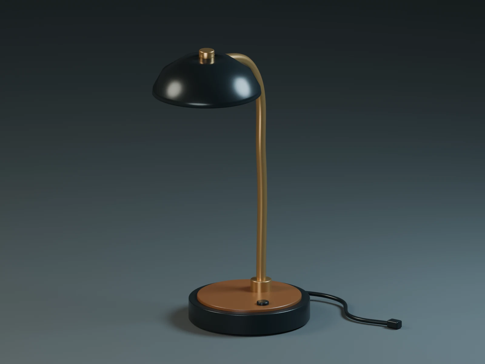
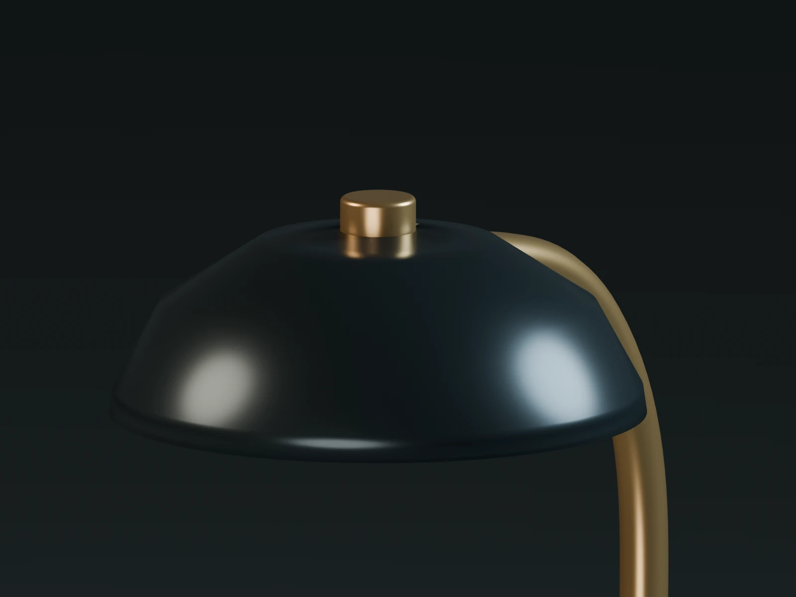
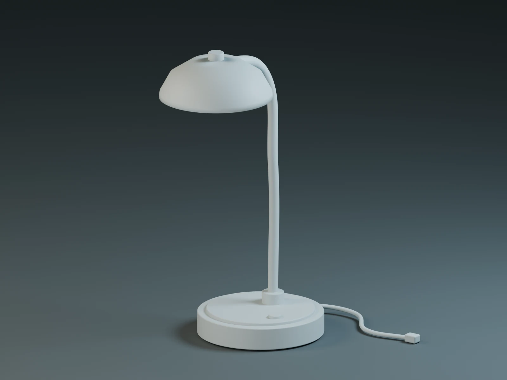
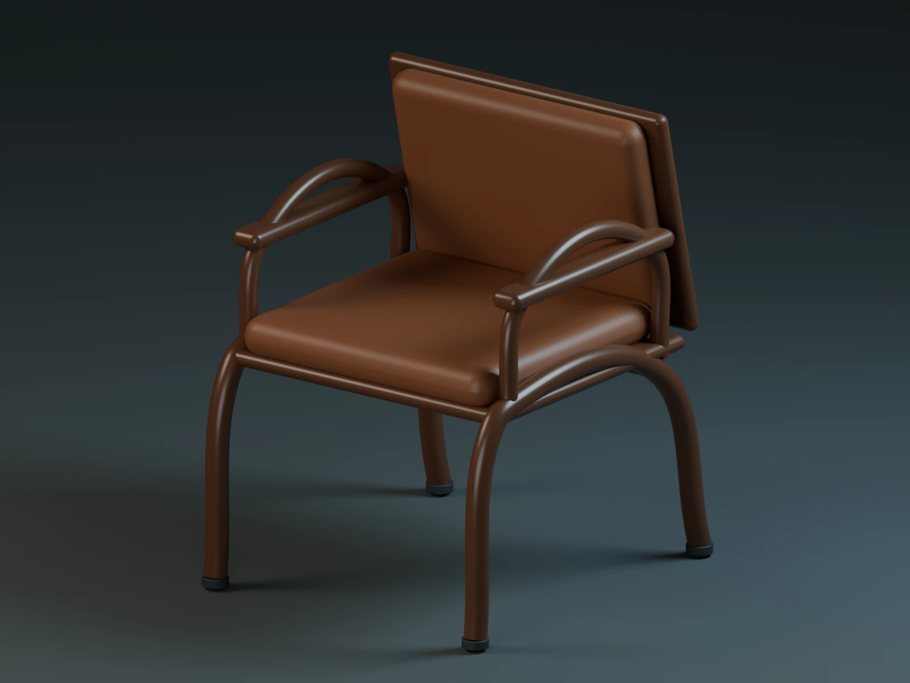
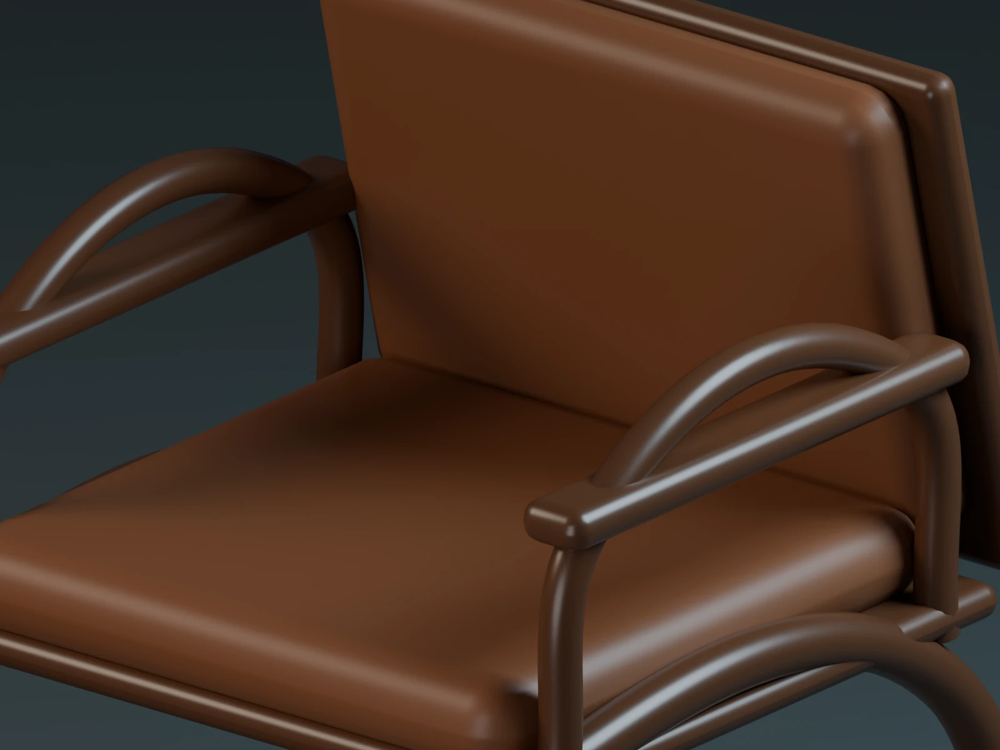
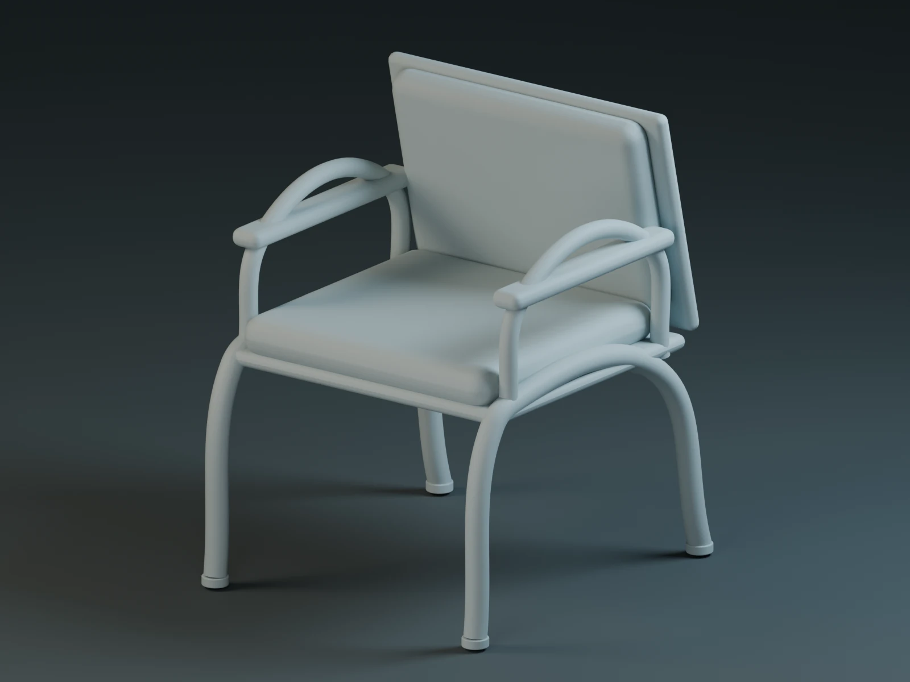

Fresh studies.
Real source files.
Three original product and furniture concepts built with AI-assisted Blender scripting. Actual Cycles renders, editable scenes and static FBX exports are retained together.
A silent, 24-second montage of actual still renders at 1080p. It presents the new models and materials; it is separate from the older character-animation recordings.
Aster Studio Speaker
Smoked walnut, graphite and champagne metal. Modeled cabinet panels, driver geometry, suspension surrounds, fasteners, feet and controls. The full four-view study is here ↗.

Arc Desk Lamp
A curved brass neck, hollow graphite shade, diffuser, weighted base, switch and power lead. A study in silhouette and material contrast.



Forma Lounge Chair
A sculptural frame with separate seat and back cushions, arm supports and joinery details. An original furniture form study.



What the files contain.
Each archive includes an editable Blender scene, an FBX geometry export, project notes and provenance. Every FBX was imported into a fresh Blender scene and checked for mesh geometry. The Blender files retain the full materials, studio lighting and render settings. FBX carries evaluated static meshes and simple material assignments; procedural shaders do not transfer completely through FBX.
These are self-directed concepts created on 10 October 2026 with AI-assisted scripting and visual iteration. They are not client commissions, manufactured or engineered products, or tested game-ready assets. The current showcase presents models and renders; it does not claim new character animation.
Download the showcase MP4 ↗